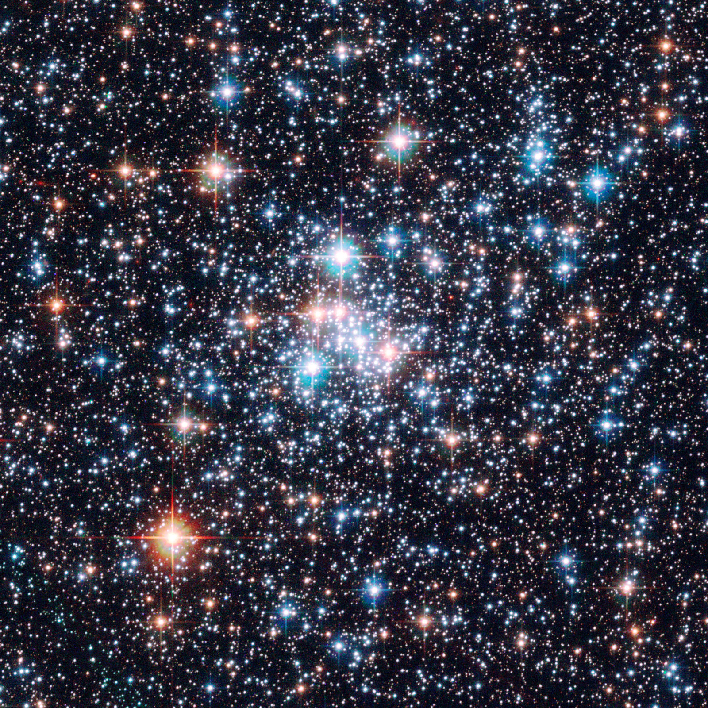

A csillagok
Sokszínű fények az égen
A csillagok hatalmas, forró gázgolyóbisok. Energiájukat a belsejükben lezajló nukleáris reakcióknak köszönhetik. Színüket és fényüket a létüket irányító két, egymással szemben álló erő: a nyomás és a gravitáció magyarázza.
A Rho Ophiuchi régiójában (balra, lent) egy öregedő vörös óriást, az Antarest lehet látni, és fiatal kék csillagokat, amelyek és csillagközi környezetben gomolygó gázokat megvilágítotva valóságos fénykavalkádot produkálnak, végül pedig sötét felhőket, amelyekben a csillagok születnek.
Ha színük és fényük szerint rendezzük el őket, a csillagok átlós irányban, egy ún. fősorozat mentén oszlanak el, amelyen a legkékebbek a legfényesebbek, s a legvörösebbek a leghalványabbak. Az egyik sarokban összegyűlnek az igen fényes vörös csillagok, azaz a vörös óriások.
A barna törpéket, amelyeknek nincs saját fényük, csak 1995 óta ismerjük. Könnyű összetéveszteni őket azokkal az óriásbolygókkal, amelyeket szintén csak mostanában kezdünk felfedezni a csillagok körül. Pedig ezek a törpék nagyon jelentősek az asztrofizikában, mert lehet, hogy ők a Világegyetem ún. hiányzó tömegének nem elhanyagolható részét képezik.

Tudtad?
A csillagok színe a hőmérsékletüktől függ.
Számok
- A 30 naptömegű (kék) csillagok feltételezett élettartama 10 millió év. A 3 naptömegű fehéreké eléri az 500 millió évet. A sárgák, amilyen a Nap is, 10 milliárd évig ragyoghatnak, és a 0,5 naptömegű kis vörös törpék elméletileg akár a 200 milliárd évet is megérhetnének.
- A csillagok felszíni hőmérséklete 2500 K-től (vörös törpék) több mint 50 000 K-ig (kék csillagok) terjed.
- A Nap felszíni hőmérséklete megközelíti a 6000 K-t.